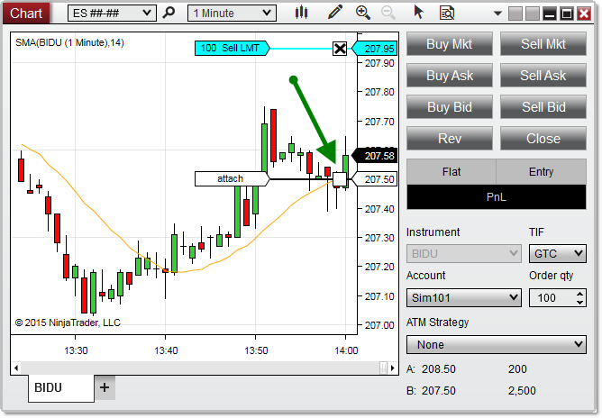
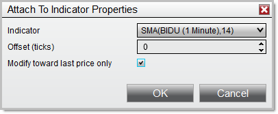

|
<< Click to Display Table of Contents >> Attach to Indicator |


|
Attach to Indicator
|
<< Click to Display Table of Contents >> Attach to Indicator |
|
Chart Trader provides the ability to attach an order to an indicator plot, automatically moving the order in lockstep with the indicator as its plot value changes. This feature can be used for entries as well as resting exit orders such as Stop Losses and Profit Targets.
Attach to Indicator |
 How to attach an order to an indicator
How to attach an order to an indicator
Attaching an Order to an IndicatorUse the following steps to attach an order to an indicator:
1.Apply at least one indicator to your chart, in the same panel as the Data Series to which you wish to place the order (See the Working with Indicators page for more information). 2.Apply a resting order to the chart (See the Submitting Orders page for more information). 3.Left mouse click the order label at the left side of the order line. 4.Hold the Ctrl key on your keyboard. You will see a ghost order line matching up with an indicator plot on the chart, with a label that reads "attach." 5.Left mouse click anywhere within the chart while continuing to hold the Ctrl key. 6.The Attach to Indicator Properties window will appear, in which you can select the specific indicator to which to attach the order (if more than one is applied to the chart). 7.Change any properties as needed (see the "Attach to Indicator Properties" section below), then click the OK button.

In the image above, the Ctrl key is held down on the keyboard after left mouse clicking the order label. The next left mouse click will bring up the Attach to Indicator Properties window, which allows us to attach the order to the SMA plot on the chart. |
 Attach to Indicator properties
Attach to Indicator properties
Attach to Indicator PropertiesThe Attach to Indicator Properties window can be accessed in one of two ways. Using the process outlined above to attach an order to an indicator will bring up this window automatically, allowing you to set parameters for the indicator tracking before attaching an order. Alternatively, you can use the process outlined below:
1.Right mouse click the label connected to the order line for an order on the chart 2.Hover your cursor over the order listed in the right click menu that appears 3.Select the Attach to Indicator menu item 4.Select the Properties menu item
The Attach to Indicator Properties window allows you to set the following properties:

|